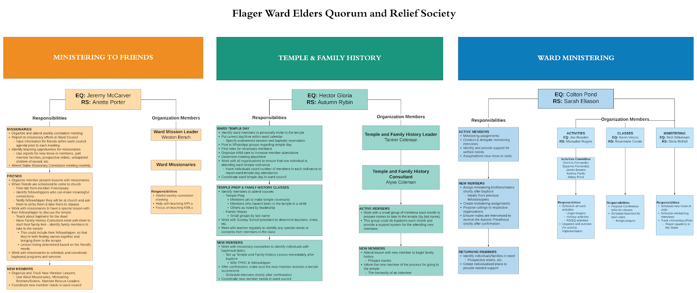

Stake Temple Recommend Interviews: For temple recommend renewals, contact Bro Rick Joseph (305) 992-3591. For members who receive their endowment, contact Bro Josh Hansen (385) 414-3573
Temple Schedule: Tuesday-Wednesday-Thursday: 6:15pm & 7:30pm. Friday: 8:00am, 10:00am, 12:00pm, 2:00pm, 4:00pm, 6:15pm, 7:30pm. Saturday: 8:00am, 9:15am, 10:30am, 11:45am, 1:00pm, 2:15pm. Last Tuesday of the month
morning sessions: 6:00am, 8:00am, 10:00am. Temple will be open on: Friday, November 29 (Day after Thanksgiving), Regular Schedule
Temple closed: The Fort Lauderdale Temple are closed on Sundays and Mondays, will be closed for two weeks for maintenance from Sunday October 27 – Monday November 11, Wednesday, November 27-Thursday November 28 for Thanksgiving, Tuesday,
December 24-Wednesday, December 25 for Christmas and Tuesday, December 31 for New Year.
Ward Temple Preview: Sunday, Nov 17th in the Young Women room. Children and Youth Face to Face Broadcast: Sunday, November 17, at 4p.m. with Elder Gerrit W. Gong of the Quorum of the Twelve Apostles and the Primary, Young Women,
and Young Men General Presidents.
Ward Temple Day: Saturday, November 23rd at 12 Noon.
Stake General Priesthood Meeting: RESCHEDULED to Sunday, December 1 at 6:00 p.m. at Stake Center (9900 West Flagler Street, Miami), all Aaronic and Melchizedek Priesthood holders in the stake are to attend. Refreshments provided
Youth Extravaganza: December 7 at 6pm
At the stake center

Sunday Program
Presiding: Bishop Julio Duran Conducting: Bishop Julio Duran Music Conductor: Brother Kevin Davis Organist: Sister Natasha Viecco